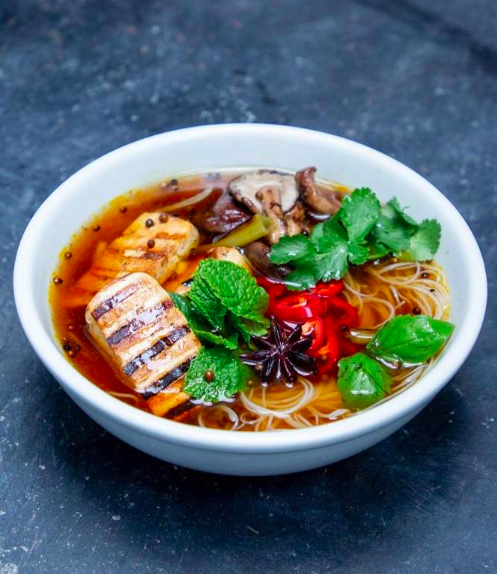
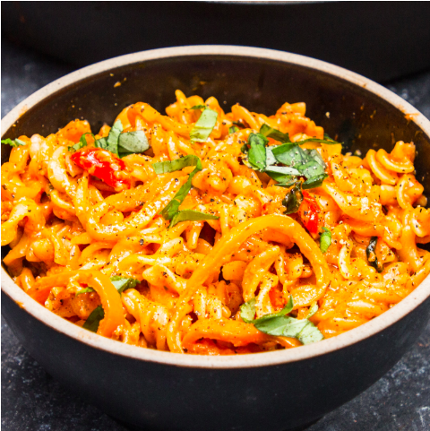

It's no secret that a balanced diet is beneficial for your physical well
being, but did you know that eating well can improve your mental health too?
In fact, diet is such an important component of mental health that it has
inspired an entire field of medicine, called nutritional psychiatry.
Hundreds of scientific studies have been published that support the link
between what we eat, and our risk of depression.
“A dietary pattern characterized by a high intake of fruit, vegetables,
whole grain, fish, olive oil, low-fat dairy and antioxidants and low intakes
of animal foods was apparently associated with a decreased risk of depression.
A dietary pattern characterized by a high consumption of red and/or processed
meat, refined grains, sweets, high-fat dairy products, butter, potatoes and
high-fat gravy, and low intakes of fruits and vegetables is associated with an
increased risk of depression.”
It's therefore vitally important that we take care of diet to reduce stress,
feel physically well and reduce the risk of depression. Here are some recipes
you could try out that are easy, cheap, student-friendly, and most of all
healthy!
Recipes
Ingredients

- 1 Tsp of Coriander Seeds
- 1 Cinnamon Sticks
- 1 Large knob of Ginger
- Vegetable stock
- 200 Vermicelli Rice Noodles
- 2 Packs of Shiitake Mushrooms
- Handful of Basil
- Handful of Coriander
- 3 Spring Onions
- 1 Red Chilli
- 2 x 240g Packs of Tofu
- 5 Tablespoons of Soy Sauce
Method
- Into a saucepan, add chopped spring onions, half of your chopped red
chilli (keep the rest for later), coriander seeds, star anise, ginger
and cinnamon stick and toast for a few minutes.
- Next add the vegetable stock and a your soy sauce and leave to simmer
on a low heat.
- Tofu time. Slice it up and cover in soy sauce and olive oil and add to
a pan. Allow it char on either side. Set it aside.
- Add your mushrooms to the pan and allow them to soak up the soy sauce
from the tofu.
- Place your rice noodles into hot water. Once softened take the noodles
out and add to your bowls for serving. Add your broth to the bowls
followed by the tofu and mushrooms. Finally, garnish with chopped
chilli, mint, coriander and basil. Then tuck in!
Ingredients
- 4 spring onions
- Thumb sized piece of ginger
- 1 red chilli
- 2 carrots
- 3 garlic cloves
- 8 boneless chicken thigh fillets
- 300g cooked rice
- 200g frozen peas
- 4 eggs
- Soy sauce
Method
- Slice the spring onions, ginger, red chilli, carrots and garlic.
- Season the chicken thighs. Get a large frying pan on the heat,
drizzle in some oil then fry the chicken thighs until browned on
each side. Pour 100ml water into the pan, put a lid on it and cook
the chicken thighs over a low-medium heat for 5 -6 minutes until
tender. Remove the chicken, shred, and set aside.
- Pour the liquid out of the pan, wipe then return to the heat. Add a
big splash of oil then fry half the spring onions, garlic, chilli
and carrots until softened. Tip in the cooked rice, frozen peas and
shredded chicken. Give everything a good mix together and cook for a
couple of minutes to toast the rice.
- Meanwhile beat the eggs, pour into the pan and stir to scramble.
Season with soy sauce then divide the chicken fried rice between
bowls and top with the remaining spring onions.
- Serve with lime wedges!
Ingredients

- 4 Tablespoons of Sacla’ ‘Nduja Pesto
- Bunch of Basil
- Cheddar
- Parmesan
- 500g Fusilli
- Oregano
- Red Wine Vinegar
- 1 Lemon
- 1 Clove of Garlic
- Pack of Sweet Peppers
Method
- Slice up your peppers.
- Add to a wide frying pan with a splash of oil.
- Fry your peppers until they begin to soften. Then add a clove of
chopped garlic, a heaped teaspoon of oregano and 2 tablespoons of red
wine vinegar.
- Once the garlic is soft, add 4 tablespoons of Sacla’ ‘Nduja Pesto.
Mix it in.
- Get your pasta cooking in a large pan of salted boiling water.
- Add 8 tablespoons of the pasta water to your pesto sauce. Mix it in.
Grate in 150g parmesan and 150g cheddar in to the sauce. Stir in the
cheese until it has melted.
- Once the pasta is cooked, drain it, and then add it to your sauce.
Fold it through. Squeeze in the juice of a lemon, add a large handful
of chopped basil, and a good grinding of pepper.
- Stir everything together, and remove the pasta from the heat.
- Serve it up and demolish.
Links and Resources
There are so many resources online for eating healthy for a healthy mind!